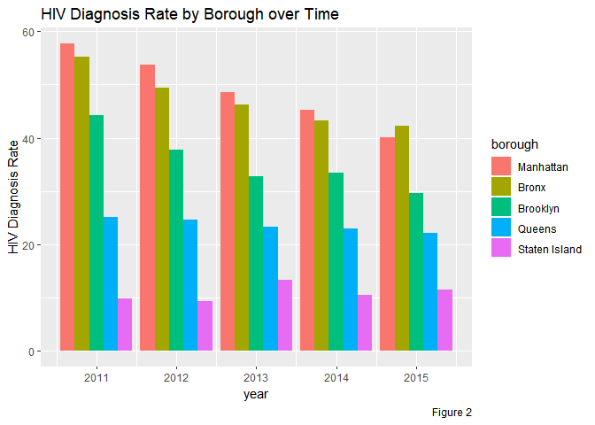
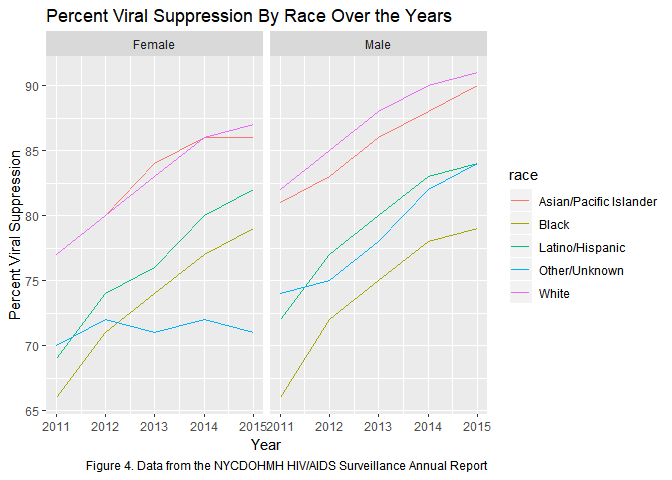

Data Science I: Final Report
December 6th, 2018
Project Title
Identification And Analysis of Trends And Disparities In HIV/AIDS For NYC
Group Members
- Bryce Wong (baw2160)
- Sunny Siddique (as5457)
- David Yu (ky2288)
- Noah Kreski (Ntk2109)
- Briana Lettsome (Bjl2150)
Motivation / Related Work
According to the the past decade or so, improvements in drug therapies and prevention intervations have led to a decreased number of AIDS cases. In June, 2014, New York Governor Andrew Cuomo announced a new strategy designed to “End the Epidemic” in the state through a combination of increased HIV screening and testing, promotion of Pre-exposure Prophylaxis (PrEP) and improved linkage and retention in clinical care for HIV-positive persons. Since then, the New York City Department of Health and Mental Hygiene (DOHMH) reported a decline in new infections of nearly 8 percent annually or approximately 15% since the campaign was launched.
Despite efforts to reduce the number of new infections, the HIV Surveillance Annual Report presented a number of key points that motivated our decision to analyze HIV infections data. Amongst them, the most noteworthy are:
- Poor New Yorkers, as well as African-American and Hispanic New Yorkers, bear a disproportionate burden of illness and premature death.
- Poor health is concentrated in certain New York City neighborhoods.
- Factors associated with poor health, such as poor access to medical care, unhealthy behaviors, and poor living conditions, are more common among certain economic and racial/ethnic groups.
Initial Questions
- Are there disparities in HIV infections / diagnoses based on NYC neighborhoods, if so, which neighborhoods have the highest incidence of HIV infections? Which neighborhoods have the lowest incidence?
- Are there disparities in common demographic factors, including age, gender and race?
- Does HIV related death rate appear elevated for certain social groups? What about non-HIV related deaths?
- Are there specific observable trends in “percent viral suppression” over the past few years? If so, do the trends appear comparable to the DOHMH interventions following Governor Cuomo’s announcements in 2014?
Methods
Data: Source, scraping method, cleaning, etc.
The data that was utilized for this project was the New York City Department of Health and Mental Hygeine (NYCDHMH) HIV/AIDS Surveillance Annual Report. This dataset is contains HIV/AIDS-related data on individuals thirteen years or older in all NYC boroughs as well as throughou the city (DOHMH HIV/AIDS Annual Report). The dataset was downloaded from NYCOpen Data, an open website that provides information and data to New Yorkers by the NYC government. Once downloaded, the raw data was imported into Rstudio as a csv file. Within this particular data there are The data contained within the dataset were collected between the years 2011 through 2016. The HIV/AIDS surveillance Annual Report contains eighteen variables, including year, age, race, HIV diagnoses, deaths, and percent viral suppression and percent linked to care. The variable outcomes used within the visualizations are defined as followed:
- Exploratory analysis
Visualizations, summaries, and exploratory statistical analyses. Justify the steps you took, and show any major changes to your ideas.
Big Picture Visualizations
hiv_year_data = hiv_data %>%
filter(
borough == "All",
uhf == "All",
gender == "All",
age == "All",
race == "All"
)
all_death_rates = hiv_year_data %>%
gather(key = death_rate_type, value = death_rate_nums, death_rate:non_hiv_related_death_rate) %>%
filter(death_rate_nums != 99999)
stacked_death_plot = all_death_rates %>%
filter(death_rate_type != "death_rate")
ggplot(stacked_death_plot, aes(x = year, y = death_rate_nums, group = death_rate_type)) +
geom_col(aes(fill = death_rate_type)) +
labs(
title = "Death Rate Types Over the Years",
x = "Year",
y = "Rate",
Caption = "Figure 1. Data from the NYCDOHMH HIV/AIDS Surveillance Annual Report" ) Data was first filtered so that the resulting data frame included only observations that aggregated results across all boroughs, UHFs, genders, ages, and races. This data frame was then tidied so that death rate type (i.e. “HIV-related death rate,” “Non-HIV-related death rate,” and overall “death rate”) was a single variable with the accompanying rate value in a separate variable column. Any observation that had a rate value of “99999” was filtered out, as this represented an observation where rate value was not calculated. Any observation where the death rate type was the total death rate was also filtered out. A stacked bar graph was then constructed with rate values plotted on the y-axis and year on the x-axis. Each bar represents the overall death rate per a year, segmented by death rate type (“HIV-related” and “Non-HIV-related”).
Data was first filtered so that the resulting data frame included only observations that aggregated results across all boroughs, UHFs, genders, ages, and races. This data frame was then tidied so that death rate type (i.e. “HIV-related death rate,” “Non-HIV-related death rate,” and overall “death rate”) was a single variable with the accompanying rate value in a separate variable column. Any observation that had a rate value of “99999” was filtered out, as this represented an observation where rate value was not calculated. Any observation where the death rate type was the total death rate was also filtered out. A stacked bar graph was then constructed with rate values plotted on the y-axis and year on the x-axis. Each bar represents the overall death rate per a year, segmented by death rate type (“HIV-related” and “Non-HIV-related”).
Figure 1 illustrates the death rate types over the years. According to the stacked bar graph, there is a decreasing trend in HIV-related death types over the years. Furthermore, there are more non-HIV-related deaths over the years. Interestingly, however, these deaths are also decreasing over time.
# Developing the code to visually assess HIV diagnosis rates over time by borough
HIV_diagnosis_data = hiv_data%>%
janitor::clean_names()%>%
filter(uhf %in% c("All"))%>%
filter(borough != "All")%>%
filter(gender == "All")%>%
filter(age == "All")
# Creating a plot to visually assess the above dataframe.
HIV_diagnosis_data%>%
ggplot(aes(x = year, y = hiv_diagnosis_rate, group = borough,
color = borough))+geom_point() + geom_line() +
labs(
title = "HIV Diagnosis Rate by Borough Over time",
x = "Year",
y = "HIV Diagnosis Rates",
caption = "Figure 2. Data from the NYCDOHMH HIV/AIDS Surveillance Annual Report"
)
In Figure 2, The original dataset was filtered down to get the summary data by borough for each year. Then, a bar plot was used for the HIV diagnosis rates, clustered by the five boroughs for each year in order of decreasing values (from Manhattan to Staten Island). Originally a spaghetti plot was used, however, it felt worthwhile to diversify the analytical methods and emphasize the differences between boroughs, not just the trends.
Figure 2 illustrates the HIV diagnosis rate by borough over time. It can be observed that, over time, the HIV diagnosis rates have decreased in all of the boroughs, except for Staten Island. For this particular borough, the HIV diagnosis rate actually increased in the years 2013 and 2016. Additionally, there is also an observed spike in diagnosis rates in the year 2014 for Brooklyn.
Also observed, over time, the Manhattan borough has the highest HIV diagnosis rate of all the NYC boroughs while Staten Island has the least. However, in 2015, the Bronx has a higher number of HIV diagnosis rates compared to Manhattan. Lastly, the Queens borough appears to have a relatively static change in HIV diagnosis rates.
Subgroup Visualizations
hiv = hiv_data %>%
filter(borough == "All") %>%
select(year, race, hiv_diagnosis_rate, gender) %>%
filter(!race == "All")
hiv %>%
ggplot(aes(x = year, y = hiv_diagnosis_rate, color = race, group = race)) +
geom_line() +
facet_grid(~gender) +
labs(
title = "HIV Diagnosis Rates Over Time by Race",
x = "Year",
y = "HIV Diagnosis Rates",
caption = "Figure 3. Data from the NYCDOHMH HIV/AIDS Surveillance Annual Report"
)
In order to assess the HIV diagnosis rates by race, the ‘All’ observations within the borough variable was kept in the dataset (Figure 3). This was done to ensure that the output sought was not confounded by results specific to each borough, but rather to all boroughs. The variables year, race, gender and HIV diagnosis rates were spepcifically selected for this analysis. Additonally, being that the race variable was being visually assessed, the ‘All’ observations within the variable was filtered out. We thought it would have been interesting to observe the differences in HIV diagnosis rates by race and gender and, as such, the spaghetti plot was faceted by gender.
Figure 3 illustrates the HIV diagnosis rates by race and faceted by gender over time. It can be observed that, regardless of gender, Blacks have the highest numbers of diagnosis rates with Latinos/Hispanics having the second highest rates over the 6-year period. Furthermore, Asian/Pacific Islander appears to have the lowest numbers of HIV diagnosis rates. There is also an interesting peak observed among the race Other/Unknown observed in the year 2013, that cannot be explained. Additionally, there is also an observed decrease in the rates of HIV diagnosis rates in the Black and Other/Unknown raceson when not looking at differentiation by gender.
When visually assessing the plot by gender, males have a much higher HIV diagnosis rates compared to females. Looking more closely, the diagnosis rates of Black males are significantly larger compared to Black females with the same distinction being made in all races, though not as wide. In Black males and females, there is a decrease in IV diagnosis rates over time. There is also a slight decrease in the Latino/Hispanic population in females, but an increase in the males. Furthermore, while there is a decrease in HIV diagnosis rates within White and Asian/Pacific Islander males, in females, there appears to be no linear change over time.
split_by_race = hiv_data %>%
filter(
age == "All",
borough == "All",
uhf == "All",
race != "All"
)
ggplot(split_by_race, aes(x = year, y = percent_viral_suppression, group = race)) +
geom_line(aes(color = race)) +
facet_grid(~gender) +
labs(
title = "Percent Viral Suppression By Race Over the Years",
x = "Year",
y = "Percent Viral Suppression",
caption = "Figure 4. Data from the NYCDOHMH HIV/AIDS Surveillance Annual Report"
)
Percent viral suppression by race and faceted by gender: Data was first filtered so that the resulting data frame included only observations that aggregated results across all boroughs, UHFs, and ages. This data frame also filtered out any observations that aggregated data across race, as we wanted to be able to explore HIV outcomes by different races. There were no observations that aggregated outcomes across all genders by each race, so I made the decision to leave these outcomes split by gender instead of manually combining findings for each gender. This meant I had to facet by gender in the resulting plot that explores changes in an outcome for each race across years. A spaghetti plot was thus constructed, faceted by gender, showing change in “percent viral suppression” on the y-axis for each race over years (on the x-axis).
hiv_age =
hiv_data %>%
filter(age != "All", borough == "All", uhf == "All")
#HIV diag rate over time by age groups
hiv_age %>%
ggplot(aes(year, hiv_diagnosis_rate)) +
geom_line(aes(group = age, color = age)) +
facet_wrap(~gender) +
labs(
title = "HIV Diagnosis Rates Over Time by Age Group",
x = "Year",
y = "HIV Diagnosis Rates",
caption = "Figure 5. Data from the NYCDOHMH HIV/AIDS Surveillance Annual Report"
)
In Figure 5, the data was first filtered to obtain rows that only contained values for gender and age. Then, HIV diagnosis rates over time was plotted as a line graph, grouped by age groups and colored accordingly. To see if the rate distribution among age groups differed by gender, the plot was faceted by gender as well. Similar to the observations made in Figure 3, males have disproportionately higher HIV diagnosis rates compared to females. In Figure 4, however, within females, there appears to be a relatively similar distribution of HIV diagnosis rates among age groups over time. Conversely, among males, the diagnosis rates differs drastically by age groupp. The 20-29 age group has the highest HIV diagnosis rates over time.Individuals within the 60+ age group has the lowest HIV diagnosis rates over time. On a whole, for the age groups 20-29, 30-39, and 40-49, there appears to be a decrease in HIV diagnosis rates. For the remaining age groups, the trend appears to remain constant at the year 2015.
Additional Statistical Analysis
Our exploratory data visualizations indicated that there are strong disparities in HIV Infection Rates amongst the five boroughs, various age groups and genders. As a result, we decided to fit a multiple linear regression model to compute parameter estimates and to see whether these disparities are statistically significant at the 5% level of significance.
hiv_clean = hiv_data %>%
janitor::clean_names() %>%
filter(borough != "All")%>%
filter(gender != "All")%>%
filter(age != "All") %>% #Filtering out aggregate variables
mutate(borough = forcats::fct_relevel(borough, c("Manhattan", "Bronx", "Brooklyn", "Queens", "Staten Island")))
#Reordering to make Manhattan the reference borough.
linear_fit = lm(hiv_diagnosis_rate ~ gender + borough + age, data = hiv_clean)
linear_clean = linear_fit %>%
broom::tidy() %>%
mutate(term = str_replace(term, "^borough", "Borough: ")) %>%
mutate(term = str_replace(term, "^gender", "Gender: ")) %>%
mutate(term = str_replace(term, "^age", "Age Group: "))
linear_clean %>%
knitr::kable(digits = 3)| term | estimate | std.error | statistic | p.value |
|---|---|---|---|---|
| (Intercept) | 8.638 | 2.026 | 4.263 | 0.000 |
| Gender: Male | 38.946 | 1.264 | 30.800 | 0.000 |
| Borough: Bronx | 0.330 | 2.014 | 0.164 | 0.870 |
| Borough: Brooklyn | -12.317 | 1.809 | -6.808 | 0.000 |
| Borough: Queens | -26.336 | 1.848 | -14.249 | 0.000 |
| Borough: Staten Island | -33.784 | 2.338 | -14.451 | 0.000 |
| Age Group: 20 - 29 | 42.615 | 2.190 | 19.458 | 0.000 |
| Age Group: 30 - 39 | 31.384 | 2.190 | 14.330 | 0.000 |
| Age Group: 40 - 49 | 29.515 | 2.190 | 13.476 | 0.000 |
| Age Group: 50 - 59 | 13.299 | 2.190 | 6.072 | 0.000 |
| Age Group: 60+ | -5.407 | 2.190 | -2.469 | 0.014 |
Notable results from our multiple linear regression analysis include:
- Compared to Manhattan, all boroughs have a statistically significantly different HIV infection rate (p<0.01), adjusting for gender and age group. In particular, on average, the Bronx has a 0.330 percentage point higher HIV infection rate compared to Manhattan, adjusting for gender and age group.
- On average, males have a 38.9 percentage point higher HIV infection rate compared to females, adjusting for borough and age group.
- On average, compared to 13-19 year olds, 20-29 year olds have a 42.6 percentage point higher HIV infection rate (p<0.01), adjusting for gender and borough. With age, the mean difference in HIV infection rate appears to decrease, adjusting for gender and borough.
Discussion
Data Can Be Found Here